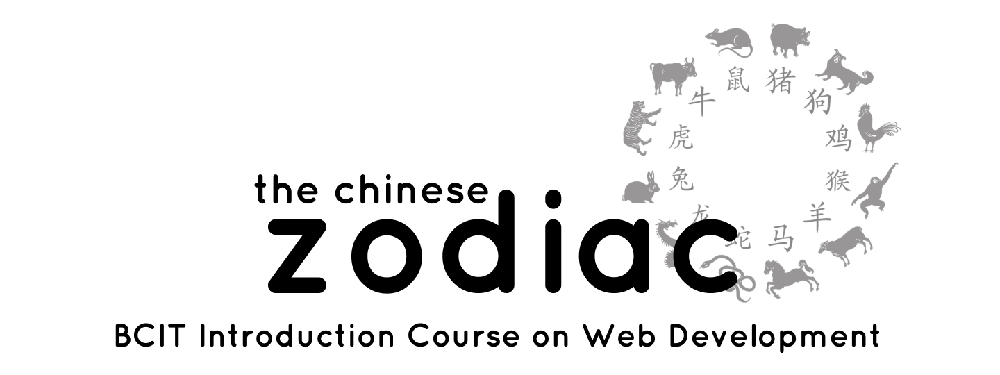

Home Contact Us The Zodiac Collection
Showcase
The Zodiac Collection
Pigs enjoy good social relationships, so you don’t need to try very hard. With traits of sincerity and integrity, they are popular friends.
Pigs are clear-minded, and not preoccupied with minor things that concern other people.
They value friendship highly and never betray friends unless in special circumstances.
In love relationships pigs are affectionate and sexual.
They are faithful to their partners. Once they find the right partner, they’re typically committed for the long-term.
However, due to lack of proper communication, sometimes Pigs cannot handle problems in relationships.
If you want to have a long-term relationship with a Pig, be honest with and have knowledge of his/her inner thoughts.